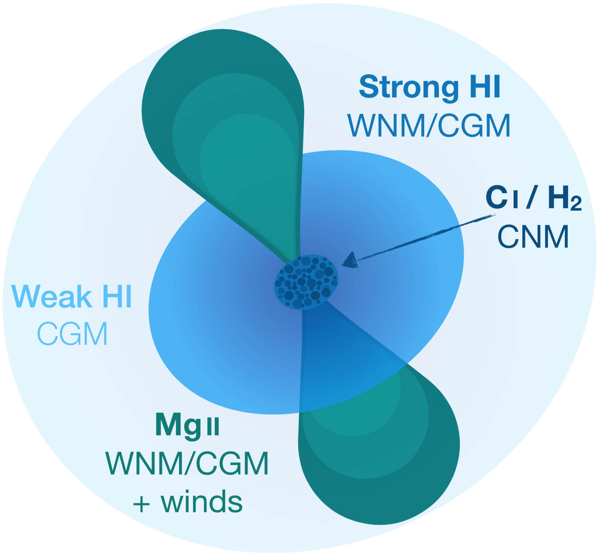

Galaxies in Absorption

Image credits: ESO.
When a galaxy happens to lie along the line of sight to a bright and distant quasar, we can infer the presence of the galaxy through the imprint of its interstellar gas in the spectrum of the background quasar. Even though the galaxy is much fainter than the bright quasar, we can therefore still identify and study the faint galaxy. The gas inside or around galaxies absorbs part of the light emitted by the quasars. The resulting spectrum consequently presents dark 'valleys' that can be attributed to well-known elements and possibly molecules. In this schematic representation, the VLT observes (D) the features associated with three systems along the line of sight, located at different distances (A, B, and C). Due to the difference in distance (or light travel time), the wavelength of these 'absorption valleys' are shifted by different amounts allowing us to separate the contributions of the various systems. The quasar, which acts as a beacon, is the bright object at the left of the image.
Galaxies in Absorption
Depending on which absorption lines we look for in the quasar spectra, we can select galaxies with different properties — a bit like changing the photometric filter when observing the light emitted by galaxies. The selection method that I use the most for my work, is based on the strongest transition of neutral hydrogen: the Lyman-α (also called HI) line at a rest-frame wavelength of 1216Å. Due to the absorption of the Earth's atmosphere at wavelenghts shorter than 3000Å, we can therefore not see the absorption from neutral hydrogen unless the absorption systems have been 'red-shifted' into the optical wavelength range which is observable from the ground. A very high redshift means that the light has traveled very far (and has been stretched in wavelength by the cosmic expansion of space), and therefore we can study very distant galaxies and their neutral gas by using this powerful absorption line.
Another method to selecting galaxies or their surrounding gas is through another strong absorption line, namely the characteristic doublet of magnesium (also called MgII tracing singly ionized magnesium). Absorption lines from this metal species indicates that the gas we're probing has been enriched by metals from previous generations of star formation that have released their metals through supernova explosions or by stellar winds. By selecting galaxies using these absorption lines we can therefore trace more metal-rich, warm (104 K) gas phase typically associated with galactic outflows.
The last kind of absorption lines that I will present here is related to the cold (100 K) gas phase of galaxies. This phase is important for the formation of stars, since stars only form out of this dense and cold gas phase where gravity can take over and make the gas clouds collapse. In this cold gas phase, the gas shows strong absorption from molecular hydrogen (H2) and neutral metal species (such as carbon or sodium). When we detect these lines in a quasar spectrum we therefore know that we are observing the imprints of cold gas in the quasar spectrum.
Schematic illustration of a galactic environment in a dark matter halo. The light blue region marks weak absorption from hydrogen, which is partly ionized and partly neutral, in the surrounding so-called circumgalactic medium. As we move to smaller scales towards the center of the halo, the hydrogen gas becomes predominantly neutral and this gives rise to stronger absorption seen in Lyman-α. The very inner part of the illustration depicts the cold gas phase where stars are actively forming out of the dense gas clouds. This region is characterized by absorption from molecular hydrogen (H2) and neutral carbon (CI). The green biconical region marks galactic outflows which distribute metal-enriched material from the active star-forming regions out into the circumgalactic medium via supernova explosions and strong stellar winds.